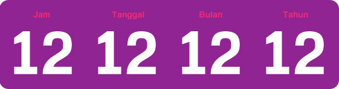
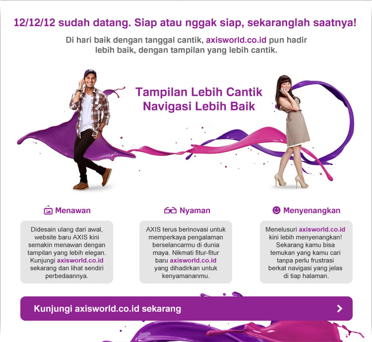
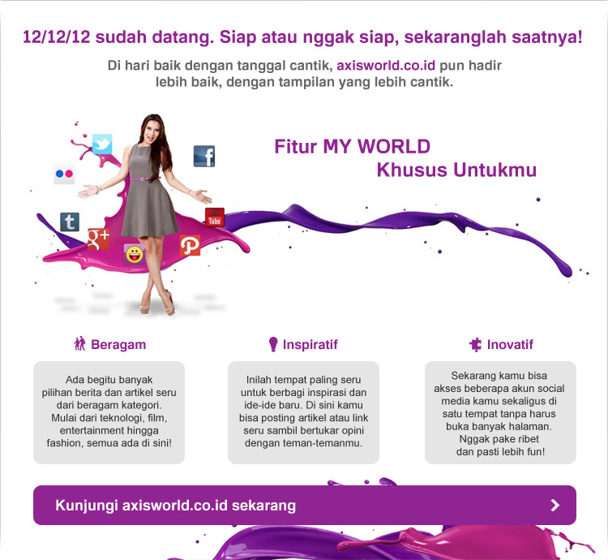

0
0
:
0
0
:
0
0
Tinggal menghitung jam, menit dan detik.
Sudah siap dengan apa yang akan terjadi?
Akhirnya hari yang ditunggu datang.
Sudah siap dengan apa yang akan terjadi?
Asik, nggak sabar :D
521 Orang
Aduh, belum siap :(
320 Orang
Beberapa link terkait tentang ramalan 2012:
Apa Maksud "Angka Benturan" 12-12-12?
Pergantian "Dunia Kelima" Pada 12-12-12
Ramalan 2012: Planet X Bukan Planet Nibiru
Beberapa Versi Ramalan Akhir Zaman 2012
Ahli Ingatkan Soal Isu Seputar 21 Desember 2012
Prediksi Tentang 2012 Oleh Anak-Anak Indigo
Kaitan Transit Venus Dengan Ramalan 2012
Lahirnya "Dunia Baru" di Tanggal 12-12-12
Kejutan 12-12-12 di Indonesia
Apa Makna "Cantik" di Balik Angka Cantik 12-12-12?

